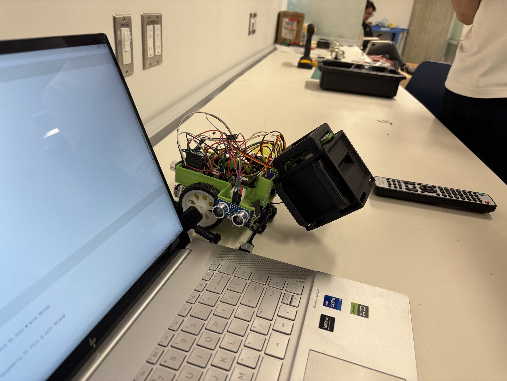
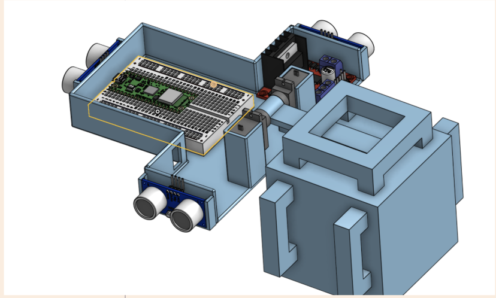
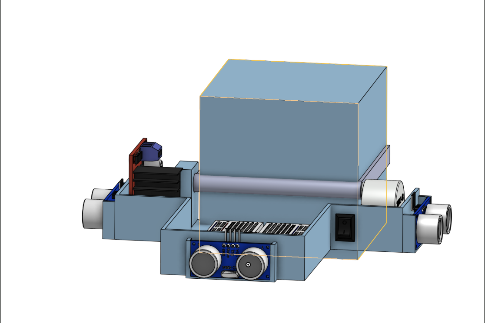

Build Log
A run-through of the build process and problems this robot actually gave us — inconsistent trials, design changes, timing — and what it took to fix each one.
Initial Design
With many actuators and sensors to fit on to the chassis, a T-shaped chassis was chosen. This provided accesspoints to both sides and the front for sensors. The rear was left wide open for the lifting mechanism and the top was left open for wiring purposes.


Issue 01
The first issue faced was the provided torque in the stepper motor. It simply wasn't enough torque to lift the payload, so the mechanical design was changed to incorporate the use of two perfectly calibrated servos.
Fix: the servos worked in sync to lift the payload with the same applied 9V battery and our robot could not only lift, but carry the payload with ease.

Issue 02
We noticed that everytime the robot ran, several factors contributed to the repeatibility of the robots performance. Some of the identifiable factors included an inconsistent battery voltage, floor conditions.
Fix: For the sake of fairness, the battery we used could not have been changed from the standard 9V. To counter the drop in voltage over time, a new battery was used during testing day. The robot was also calibrated on the irregular platform of the delivery area giving smooth and accurate turns.
It is acknowledged that given more time, the battery's voltage could be stabilized further increasing stability of the robot. Additionally a gyrosensor could have been used to measure and correct orientation of the robot as well.
→ Back to projects